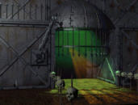
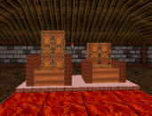
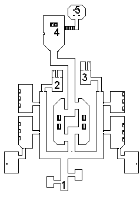

| IceWindKeep | |
| 1. | Entrance |
| 2. | Switch 1 of 2 |
| 3. | Switch 2 if 2 |
| 4. | The Switch is in the arm of the chair on the right. |
| 5. | The key's to the Dragon Towers are in here. |
This one is not really that tricky. As you enter you have flip the two switches at the end of each hall way, that will open the big door that you see right at first. Go throught that area to the throne room, and flip the switch on the arm of the chair to get entrance to the treasure room 5.
Don't forget to check the beds.
NOTE: If you are not sure if you can handle all the guy's that will be in the big room, and there are a LOT of them, before you throw the second switch go stand by the big door and cast Ring of Fire a few times to kill some off and damage most of them.
Leave us a message mgrounds@hotmail.com